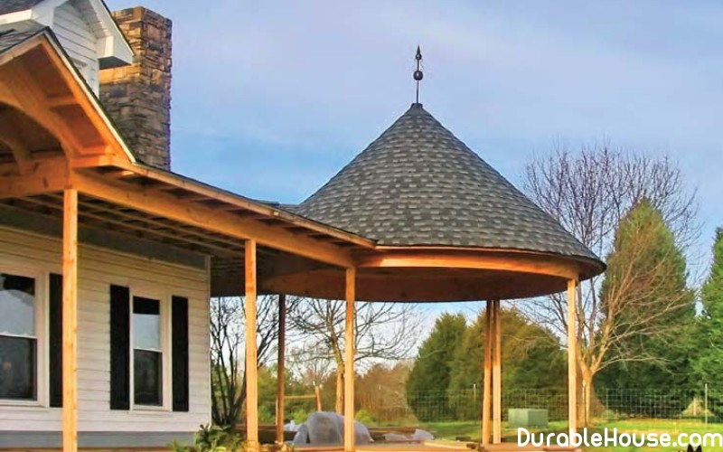

Cone-shaped roof
Conical roofs, even if they only adorn the canopy of your house, make the construction is more solemn and a bit fairy. In the Middle Ages it was pretty widespread reception of the device of roofs, especially when it was a question of erection of locks or palaces with towers.
The rafter structure of such towers is carried out by laying the rafters in a fan-like manner, in in this case, the rafter legs diverge from the common center of the fan and form a conical shape. Since they require support elements - runs, then as an upper support usually serves a round run of glued wood, which is fixed to the central the column in such a way that the highest point of the turret cone is not loaded. Second mauerlat protrudes on the wall of the turret. It is made either the same circular, like the ridge run, or divided into segments, according to the number of rafters legs, forming a polygon. The design of the ceiling beams should be designed for concentrated load in the place where the central pillar will be installed. Annular the ridge run is attached to the central pole by means of braces.
Next, the construction of the frame is like manufacturing a wheel. The ends of the rafters are fixed on a semicircle, and not by the narrowest part that provides the necessary strength of connection.
The number of rafter legs, which are the stiffeners of the conical roof, will be determine the cross-section of the material used and the necessary distance between them.
From the underside of the roof, at the place where the rafters are fastened to the support beam along the perimeter of the semicircular walls, the distance between them, on the contrary, is quite large, but this is not very good, it is necessary strive to reduce it by about half. This must be done for that the crate under the shingles has a uniform smooth bend. Achieve the desired can be as follows: at the bottom of the rafter cone between the main the bars lay auxiliary, smaller sections, giving the surface a smooth roundness and extra strength.
Now proceed to mounting the drainage gutter. To find a semicircular version on sale, yes and the diameter you need, it does not work, so you will have to build such a structure yourself. You can do this from separate segments of the metal chute that you fasten with each other. If you make the connections beautifully, then your prefab chute will be it is impossible to distinguish from the continuous, especially from afar.
It's time to do the crate. Traditional version consisting of wooden bars square section, here it is not suitable - to lay them with the necessary bend will not be that difficult, and simply impossible, you will break them rather than force them to take the desired form. the way out can be the use of flexible plastic bars or conventional water pipes. Their load-bearing capacity will be sufficient, to withstand the weight of the roof, and the flexibility of the polymer material allows them to be arcuate shape. For added reliability, place plastic bars or pipes in two layers, one above the other, and screw to the rafters with screws.
The cone-shaped roof can be covered with a folding method, laying the tile (ceramic or bitumen), shingles, shingles or reeds.
If you chose the shingles, then again you have to resort to creativity. after all, from the bottom up from row to row the width of the tiles should decrease, taking lightly the curved shape corresponding to the bend of the conical roof. Do not break your head. responsible producers have envisaged such a turn of events and, as a rule, range of products conical tiles. Calculate the length of the rafters, the angle of slope and the area of the roof and buy the necessary roofing elements.
Then put the items from the bottom up. Each subsequent tile overlap over the lateral and underlying.
Unlike traditional roofing with flat skylights, tiles from row to row are reduced on the width, therefore each successive series consists of an ever smaller number of elements, almost descending into the top of the roof.
In places where the roof joins the surface of the outer wall, a reliable waterproofing. To do this, the solid line is glued over the line of connection waterproofing tape.
To lay a flexible roof tile, you must create a solid coating. It is better to do this when the help of thin sheet plywood (3-5 mm), laid in several layers. Do not forget to put on vapor barrier, if you plan to create a warm roof.
Plywood sheets are cut in the form of a trapezoid and stacked from the bottom up. Subsequent layers must overlap connections previous. In total, it is necessary to gain a thickness of 10-12 mm. further, the layers are laid as standard - waterproofing and flexible bituminous shingles.
The very top of the cone roof usually ends with a metal ridge that you will have make to order. As a material, you can choose copper, galvanized steel with a coating or without it or stainless polished steel. You can combine the manufacture of a skate with the installation of a weather vane.
Modern weathercocks adorn not only the skates of large cottages, but also garages, garden houses, they are not rare as a decoration of arbors. Such a design will add exotics your turret, will be very helpful in this place.
In general, weathercocks are made of galvanized steel or copper, copper-alumina alloy. galvanized options are additionally covered with powder enamel or special paint, resistant to mechanical and ultraviolet influences.
The rotating part of the weather vane can be made in different ways: it can be rotating stand that is inserted into the steel pipe, or vice versa - the rack is static, the rotating element is fixed to the steel pipe. Internal cavities of rotating elements must be protected with caps. Do not forget to lubricate the movable elements with solidol - this will save your nerves on windy nights, and the lubricant will ensure an easy rotation of the arrow and protect the unit from corrosion.
The base on which the weather vane is attached is made of a steel corner or bent sheet steel thickness of 2-3 mm. This design will allow you to fix the weather vane on the ridge roofing.
A check-silhouette is attached from the top of the arrow. The best material for making a flag and a letter, indicating the sides of the world, - sheet galvanized steel 1-1.5 mm thick. Saw out her silhouette can be an ordinary electric jigsaw. The edge of the sawed shape is processed file, removing burrs and smoothing irregularities. To the arrows of the pointer the letters are soldered brazing, for example, brass.
Flag and letters are better to paint in black paint, as most manufacturers do, that the product was more visible on a light background of the sky.
The conical roof looks rather unusual. But in addition to the unusual in appearance, you we still have to deal with unusual calculations of the amount of material that it will be needed on its device. To do this, you need to know the length of the ramp and the area of the roofing coating.